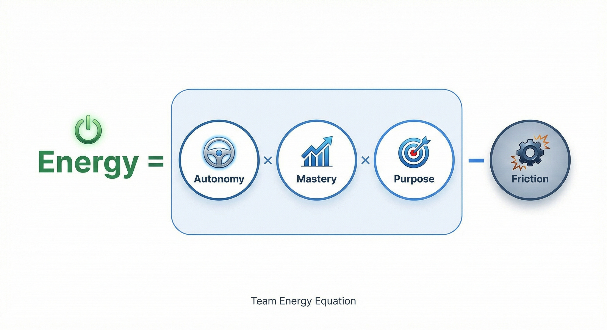

The Team Health Playbook
How to Diagnose, Fix, and Sustain High-Performing Teams
Table of Contents
"The best time to fix a team problem was three months ago. The second best time is today."
A Note Before We Start
I've spent twenty years building and leading teams. I built Mailigen from four people crammed into a 12-square-meter office to forty people and an acquisition. During my time at Pipedrive, I served as VP Product as we scaled from 700 to 1000 people through a Vista Equity Partners acquisition — watching the company become a unicorn while navigating the massive organizational changes that come with that growth.
Now I'm leading software and service product teams at Aerones, a pioneer in wind industry robotics, applying everything I learned the hard way at Mailigen and the right way at Pipedrive to help a founder-led company cross the chasm.
Along the way, I've made every mistake in this playbook. I've watched teams go silent. I've seen talented people burn out on hamster wheels. I've lost great people because I wasn't paying attention.
This playbook is what I wish someone had handed me at each of those stages. It's not theory. It's the distilled, practical toolkit I use every single week. Every framework has been tested in real companies, with real teams, under real pressure.
Here's my promise: if you spend one hour reading this and one week implementing it, you'll understand your team better than most leaders do after years. And you'll have specific moves to make things better — starting tomorrow morning.
Let's get into it.
PART 1: The 5 Dimensions of Team Health
Why Most Leaders Get Team Health Wrong
Here's the uncomfortable truth: most teams are struggling, and their leaders don't know it until someone quits. Or worse — until the best people quietly disengage while still showing up.
I've seen this pattern everywhere:
- At Mailigen, where I thought "we're all friends" was enough
- At Pipedrive, where rapid scaling meant losing track of entire teams
- At Aerones, where brilliant engineers were burning out in silence
The problem isn't that leaders don't care. It's that they're looking at the wrong signals. Revenue up? Ship dates hit? Great. But those are trailing indicators. By the time they turn bad, the damage is done.
What you need are leading indicators — signals that tell you a team is starting to drift before performance craters. And you need a systematic way to spot them, not just "walking around and checking vibes."
That's what this playbook gives you.
The CETAG Framework: Your Team's 5 Vital Signs
After twenty years of building teams, making mistakes, and occasionally getting it right, I've found that every team problem traces back to one of five root causes. Not seventeen. Not "it depends." Five.
I call it CETAG (pronounced "see-tag" — not the world's sexiest acronym, but it sticks):

1. CLARITY
Does everyone know what we're doing and why?
Without clarity, even motivated people spin their wheels. They work hard but not smart. Meetings multiply because nobody's sure who decides what. As Kim Scott emphasizes in Radical Candor, clarity is kindness — ambiguity is cruelty to your team.
What Good Looks Like:
- Everyone can explain the team's top 3 priorities
- Decisions happen fast because ownership is clear
- People push back on new requests that don't align
- Teams use quarterly/monthly planning cycles effectively
Red Flags:
- "Let me check with [3 other people]" is the default response
- Meetings end with "So... what are next steps?"
- Different team members give different answers about priorities
2. ENERGY
Do people actually want to show up?
Energy isn't about being extroverted or "rah-rah." It's about whether people feel pulled toward the work or are just going through the motions. Future-backward planning — starting with an exciting vision and working backwards — is one powerful way to generate energy.

Where:
- Autonomy = How much control people have over their work
- Mastery = Whether they're learning and growing
- Purpose = Connection to something meaningful
- Friction = All the BS that makes work harder than it should be
What Good Looks Like:
- People volunteer for extra projects
- Mondays feel like opportunity, not obligation
- The team self-organizes to solve problems
- Future-backward planning excites the team
Red Flags:
- Camera-off is the default in video calls
- "That's not my job" becomes common
- Friday afternoon energy is 10x Monday morning energy
3. TRUST
Can people be real with each other?
Trust is the difference between a team and a group of people with the same manager. Without it, everything takes longer and nothing goes deep.
What Good Looks Like:
- People admit mistakes without fear
- Disagreements happen in meetings, not in Slack DMs after
- "I don't know" and "I need help" are normal phrases
- Teams practice Radical Candor — caring personally while challenging directly
Red Flags:
- Cover Your Ass (CYA) behavior — excessive documentation, CC'ing everyone, blame-shifting
- Meetings where nobody disagrees but nothing feels resolved
- People say one thing in the room, another in the hallway
Note on CYA Behavior: CYA (Cover Your Ass) behavior means people spend more energy protecting themselves than solving problems. They document every interaction, copy managers on routine emails, and focus on assigning blame rather than finding solutions. It's a clear sign that psychological safety is missing.
4. ALIGNMENT
Are we all pulling in the same direction?
Alignment is what turns individual effort into team results. Without it, you get politics, duplication, and dropped balls.

What Good Looks Like:
- Trade-offs are made for the greater good without resentment
- Cross-functional work flows smoothly
- Success metrics are shared, not siloed
Red Flags:
- "My project" instead of "our goal"
- Surprise announcements that affect other teams
- Win-lose dynamics between departments
5. GROWTH
Are people getting better every quarter?
Teams that aren't growing are dying — slowly at first, then suddenly. Your best people need to see a path forward, or they'll find one elsewhere.
What Good Looks Like:
- People take on stretch assignments eagerly
- Skills from 6 months ago feel outdated
- Team members become go-to experts in new areas
Red Flags:
- "We've always done it this way"
- The same people in the same roles doing the same things
- Learning happens outside work, not during it
How The 5 Dimensions Interact
These dimensions aren't independent — they form a system. When one degrades, it pulls others down:

- Low Clarity → Low Energy (why try hard if you don't know what matters?)
- Low Trust → Low Alignment (why collaborate if you can't be honest?)
- Low Growth → Low Energy (why engage if you're not developing?)
But the reverse is also true. Improvements compound:
- Better Clarity → Better Alignment (shared understanding enables coordination)
- Better Trust → Better Growth (psychological safety enables risk-taking)
- Better Energy → Better everything (engaged people find ways to improve)
This is why fixing team health isn't about tackling everything at once. It's about finding the one dimension that's bottlenecking the others and starting there.
PART 2: The 40 Diagnostic Questions
Reading The Signals Your Team Won't Say Out Loud
Your team is constantly telling you how they're doing. Not in words — people are too polite, too political, or too checked-out for that. They tell you in behaviors, patterns, and what they don't say.
These 40 questions teach you to read those signals. They're based on twenty years of pattern-matching across three very different companies. Each question targets one of the five dimensions and gives you specific things to look for.
How to Use These Questions
- First Pass (30 minutes): Go through all 40 questions alone. Mark each as Green (strong), Yellow (concerning), or Red (urgent).
- Dig Deeper (1 week): For every Yellow or Red, spend a week observing more carefully. Are you seeing patterns or isolated incidents?
- Validate (ongoing): Use the pulse system (Part 4) to check if your read matches what the team experiences.
- Act (immediately): For each problem area, this playbook gives you specific interventions. Don't wait for perfect information.
Important: Every question includes "What to do if it's off" guidance. Don't just diagnose — act on what you find. The interventions are designed to work even if you're not 100% sure of the diagnosis.
CLARITY: Questions 1-8
1. Can everyone on the team state the top 3 priorities in the same order?
- Look for: Consistency when you ask different people separately
- Red flag: Three people, three different priority lists
2. Do people know exactly who makes which decisions?
- Look for: Speed of decision-making, clarity in meetings
- Red flag: "Let me check with..." is the default response
3. When did your team last say no to a good opportunity?
- Look for: Strategic focus and trade-off discussions
- Red flag: Every good idea becomes a new project
4. How many "quick syncs" happened last week?
- Look for: Scheduled collaboration vs. interrupt-driven alignment
- Red flag: More than 5 unplanned alignment conversations
5. Can team members explain why their work matters to end users?
- Look for: Connection between daily tasks and customer impact
- Red flag: "I just build what I'm told"
6. How much time in meetings is spent on updates vs. decisions?
- Look for: High decision density in meetings
- Red flag: 80% updates, 20% decisions
7. Do people know what success looks like for their role?
- Look for: Clear personal metrics and growth indicators
- Red flag: "I'll know it when I see it" performance standards
8. When was the last time priorities actually changed?
- Look for: Quarterly or monthly strategic adjustments
- Red flag: Same priorities for 6+ months, or changing weekly
ENERGY: Questions 9-16
9. What percentage of cameras are on in video calls?
- Look for: 80%+ cameras on as default
- Red flag: Black squares everywhere
10. How many people volunteered for the last new initiative?
- Look for: Multiple hands up for stretch opportunities
- Red flag: Cricket sounds when asking for volunteers
PART 3: The 30-Day Fix
How to Turn Around a Struggling Team (Without Firing Anyone)
You've diagnosed the problems. Maybe you have a few reds, a bunch of yellows. Now what?
Most leaders either panic and change everything (chaos) or nibble around the edges (useless). You need a middle path: systematic, focused change that builds momentum without breaking the team.
This 30-day plan has saved multiple teams across my career. It works because it's designed for momentum, not perfection.
Week 1: Stop the Bleeding (Days 1-7)
Day 1: The Reality Check Conversation
Gather the team. Be honest:
"I've been looking at how we're working together, and I see some things that need to change. We have issues with [pick your worst dimension]. Over the next 30 days, we're going to fix this together. It won't be perfect, but it will be better."
No sugar coating. No blame. Just reality and commitment.
Days 2-3: Quick Wins
Pick the three most annoying, fixable problems and solve them immediately:
- Too many meetings? Cancel half of them
- Unclear priorities? Write them on a whiteboard
- No customer feedback? Share some in Slack
The goal isn't perfection — it's showing that change is possible.
Days 4-7: Listen Tour
Have 15-minute 1:1s with everyone. One question: "What's the one thing that would make your work life better?"
Don't solve. Don't defend. Just listen and write it down.
Weeks 2-3: Build Momentum (Days 8-21)
Week 2: Focus on Your Worst Dimension
Pick the dimension that scored worst and attack it:
- Clarity problems? Run a priority workshop. Use quarterly/monthly cycles for planning. Force-rank everything. Cut bottom 50%.
- Energy problems? Add autonomy. Use Future-Back planning to connect work to exciting outcomes. Let people own solutions.
- Trust problems? Model vulnerability. Share your own mistakes. Reference frameworks like Radical Candor.
- Alignment problems? Map interdependencies. Create shared goals.
- Growth problems? Launch Friday learning sessions. Pair seniors with juniors.
Week 3: Make Progress Visible
- Daily standup addition: "What's better than last week?"
- Create a simple dashboard showing improvement
- Celebrate small wins publicly
- Share positive feedback from other teams
Week 4: Lock in Progress (Days 22-30)
Days 22-25: Systematize What's Working
Whatever improved, make it stick:
- Turn experiments into standard practices
- Document new ways of working
- Assign owners to maintain improvements
Days 26-28: Plan Next 30 Days
- Run retrospective on the 30-day fix
- Pick next dimension to improve
- Get team buy-in on next focus area
Days 29-30: Celebrate and Communicate
- Share success with leadership
- Recognize people who drove change
- Be honest about what's still broken
The 30-Day Fix Principles
- One dimension at a time — Trying to fix everything breaks everything
- Momentum over perfection — 30% better is achievable; 100% better is fantasy
- Make it visible — Progress people can't see doesn't count
- Systems, not heroics — If it requires constant energy, it won't last
PART 4: The Weekly Pulse System
Your Early Warning System for Team Health
Annual engagement surveys are autopsies — they tell you what killed morale six months ago. You need an EKG, not an autopsy. Something that shows you problems while you can still fix them.
The Weekly Pulse System takes 5 minutes to run, gives you trend data, and catches issues before they metastasize.
The 5 Weekly Questions
Every Friday, everyone rates these on a 1-4 scale:
- CLARITY: "I know exactly what's most important for us to achieve right now"
- 1 = Completely unclear
- 2 = Somewhat unclear
- 3 = Mostly clear
- 4 = Crystal clear
- ENERGY: "I felt energized by our work this week"
- 1 = Drained
- 2 = Low energy
- 3 = Good energy
- 4 = Highly energized
- TRUST: "I could be fully honest with my team this week"
- 1 = Held back significantly
- 2 = Held back somewhat
- 3 = Mostly open
- 4 = Completely open
- ALIGNMENT: "We worked well together toward shared goals"
- 1 = Significant misalignment
- 2 = Some misalignment
- 3 = Mostly aligned
- 4 = Perfectly synchronized
- GROWTH: "I learned something valuable this week"
- 1 = No learning
- 2 = Minor learning
- 3 = Good learning
- 4 = Major growth
How to Run the Pulse
Recommended Approach: Manual Collection
- Send questions via Slack/Teams on Friday
- People respond with 5 numbers (e.g., "3, 2, 4, 3, 2")
- Manager compiles into simple spreadsheet
- Takes 2 minutes to complete, 5 minutes to compile
Alternative: Team Retro Addition
- Add to end of weekly retro
- Public scores, discuss gaps
- Takes 5 minutes
Reading the Trends
The magic isn't in single scores — it's in movement over time:

Watch for:
- Any dimension dropping 0.5+ points
- Consistent scores below 2.5
- Divergence (some 4s, some 1s)
- Energy/Trust drops (earliest indicators)
When to Act
- Score drops 1+ point: Immediate 1:1s to understand why
- Score below 2.5 for 2 weeks: Run focused intervention
- Scores diverging: Team meeting to surface different experiences
- All scores above 3.5: Share what's working, protect it
Making It Stick
Most pulse systems die because:
- Leaders don't act on the data
- It becomes another checkbox
- People game the system
To make yours survive:
- Act on every downward trend — even small actions
- Share the aggregate data — teams need to see it
- Keep it short — 5 questions max
- Connect to changes — "Based on last week's pulse..."
PART 5: Three Real-World Transformations
When Theory Meets Reality: What Actually Happened
These aren't sanitized case studies. They're real stories from real teams, warts and all. Each one taught me something different about fixing team health.
Story 1: Mailigen — Building Culture as a Remote Founder
The Context
2009: I was 26, running a 10-person email marketing startup from wherever my laptop was. For the first three years, I was a remote, traveling founder — spending most of my time away from our Riga office. I'd do frequent two-week trips to Latvia where the team was based, and yes, during those trips we'd eat lunch together and I'd try to be present. But the reality was the team was forming without me.
My business partner was actively running the office day-to-day. I was driving development and partnerships, collaborating remotely. Classic divided leadership with a distributed twist.
What Broke
By year 4, we had 20 people and serious culture fractures:
- Two different companies: "Riga team" vs. "Janis's projects"
- Decisions made in office hallways I was never in
- People who'd never had a real conversation with the CEO
- My partner and I had different implicit values, creating confusion
The Intervention
Started with brutal honesty. I flew to Riga and stayed for a month. First all-hands: "We have two cultures. That ends now."
The fixes:
- Clarity: Created "Friday Updates" — everyone shares what they did, learned, and struggled with
- Trust: Started admitting my mistakes publicly. "I screwed up the pricing model. Here's what I learned..."
- Alignment: Built first real roadmap together, not in isolation
- Energy: Gave teams ownership of features end-to-end
- Growth: Launched "Teaching Tuesdays" — everyone teaches something
What I Learned
Remote leadership isn't about tools — it's about intentional culture building. The rituals you create matter more than the time you spend. A present leader who's remote beats an absent leader who's in the office.
By acquisition in 2020, we had a culture strong enough to survive integration. But it almost didn't happen because I assumed proximity would create culture automatically.
Story 2: Pipedrive — Scaling Through a Unicorn Transition
The Context
2020: I joined Pipedrive as VP Product when they had 700 people. Very much a bottom-up, customer-focused, product-led business. The founders were still driving the organization — the CEO was customer zero, deeply involved in product decisions.
Over my four years there, we scaled to 1000 people and went through a Vista Equity Partners acquisition that valued the company at over $1 billion. The R&D department alone grew to 450 people.
What Broke
Scale broke everything:
- Decisions that used to take days took weeks
- Teams didn't know what other teams were building
- The "startup hustle" was burning people out at scale
- PE brought process that felt like bureaucracy to startup folks
- Bottom-up innovation clashed with top-down planning needs
The Intervention
Instead of fighting the transition, we leaned into it:
- Clarity: Introduced proper quarterly planning cycles. Clear OKRs cascaded down.
- Alignment: Built product councils — cross-team forums for decisions
- Trust: Created "radical transparency" sessions where leaders shared real challenges
- Energy: Protected innovation time — 20% for experiments, even during PE transition
- Growth: Launched internal mobility program — people could switch teams quarterly
The key insight: You can't preserve startup culture at scale. You have to consciously evolve it. We kept the customer obsession and innovation but added structure to channel it.
What I Learned
Scaling isn't about choosing between startup speed and enterprise discipline — it's about knowing when to apply which. The weekly pulse system helped us spot which teams needed more structure and which needed more freedom. One size didn't fit all.
Story 3: Aerones — Transforming a Wind Industry Robotics Pioneer
The Context
2024: I joined Aerones to lead software and service product teams. Aerones is a wind turbine robotic maintenance service and digital solutions company — a true pioneer in bringing robotics to the wind industry.
Classic technical founder-led company hitting the scaling challenge. Brilliant technology, strong mission, but organizational growing pains as we pushed from startup to scale-up.
What Broke
The symptoms were classic:
- Engineers organized by function, not outcome
- Individuals constantly shuffled between projects
- Output focus: "Did we build it?" vs. "Did it create value?"
- Ownership unclear — everyone owned everything, so no one owned anything
The Intervention
Two major organizational changes:
First: Reorganized into Focused Tribes
- Moved from functional teams to cross-functional tribes
- Each tribe owns a complete tool, system, or product
- No more rotating individuals — stable teams with clear ownership
- Engineers, designers, and product people integrated
Second: Shifted from Output to Outcome
- Stopped measuring "features shipped"
- Started measuring "customer problems solved"
- OKRs focused on impact, not activity
- Weekly reviews about customer value, not task completion
The transformation took longer than expected — 6 months vs. the 3 I'd planned. But the results were worth it:
- Deployment frequency up 3x
- Customer satisfaction scores up 40%
- Employee engagement highest ever
- Clear ownership = faster decisions
What I Learned
Founder-led companies have special challenges. The very traits that made the founder successful — hands-on, detail-oriented, personally invested — can become bottlenecks at scale.
The key was helping the organization grow without losing the founder's vision. We preserved the mission and innovation while adding systems that could scale beyond any individual.
PART 6: Complete Toolkit
Your Copy-and-Paste Templates for Implementation
The 40 Diagnostic Questions (Print Version)
CLARITY (Questions 1-8)
- Can everyone on the team state the top 3 priorities in the same order?
- Do people know exactly who makes which decisions?
- When did your team last say no to a good opportunity?
- How many "quick syncs" happened last week?
- Can team members explain why their work matters to end users?
- How much time in meetings is spent on updates vs. decisions?
- Do people know what success looks like for their role?
- When was the last time priorities actually changed?
ENERGY (Questions 9-16)
- What percentage of cameras are on in video calls?
- How many people volunteered for the last new initiative?
- Do people work on side projects or learning during work time?
- When do people send Slack messages?
- How often do you hear genuine laughter?
- Are people building things without being asked?
- How many "how was your weekend?" conversations are real?
- Do people defend the team's work externally?
TRUST (Questions 17-24)
- When was the last time someone said "I screwed up" in a team meeting?
- Do debates happen in meetings or in private messages after?
- How much documentary evidence do people create "just in case"?
- Can people show half-finished work?
- Do team members ask each other for help?
- How fast does bad news travel up?
- Are retros actually changing how you work?
- Would people tell you if they were job hunting?
ALIGNMENT (Questions 25-32)
- How aligned are individual goals with team goals?
- Do people celebrate other teams' wins?
- How much duplicate work happens?
- Are trade-offs made for the greater good?
- How often are other teams surprised by your decisions?
- Do people know how their work affects others?
- Is success shared or hoarded?
- How aligned is resource allocation with stated priorities?
GROWTH (Questions 33-40)
- Who on your team is outgrowing their role?
- What skills from 6 months ago are now outdated?
- How many people are teaching others?
- Are people excited about their development plans?
- Do you have succession plans for key roles?
- How often do people surprise you with new capabilities?
- Are people learning from failures?
- Would your team be ready for 2x the scale?
Weekly Pulse Template
© 2026 OperatingLeader.com — Track Team Health Weekly
Team: _________________ Week of: _________________
Rate each on a scale of 1-4:
CLARITY: I know exactly what's most important for us to achieve right now
⚪ 1 (Completely unclear) ⚪ 2 (Somewhat unclear) ⚪ 3 (Mostly clear) ⚪ 4 (Crystal clear)
ENERGY: I felt energized by our work this week
⚪ 1 (Drained) ⚪ 2 (Low energy) ⚪ 3 (Good energy) ⚪ 4 (Highly energized)
TRUST: I could be fully honest with my team this week
⚪ 1 (Held back significantly) ⚪ 2 (Held back somewhat) ⚪ 3 (Mostly open) ⚪ 4 (Completely open)
ALIGNMENT: We worked well together toward shared goals
⚪ 1 (Significant misalignment) ⚪ 2 (Some misalignment) ⚪ 3 (Mostly aligned) ⚪ 4 (Perfectly synchronized)
GROWTH: I learned something valuable this week
⚪ 1 (No learning) ⚪ 2 (Minor learning) ⚪ 3 (Good learning) ⚪ 4 (Major growth)
One thing that would improve our team health: _________________________________
30-Day Fix Meeting Templates
Day 1: Reality Check Agenda
- Current state assessment (10 min)
- Share diagnostic results (10 min)
- Commit to 30-day improvement sprint (5 min)
- Q&A and concerns (15 min)
Week 1: Listening Tour Questions
- What's the one thing that would make your work life better?
- What's working well that we should protect?
- What's your biggest frustration right now?
- What would you fix if you had a magic wand?
Week 4: Retrospective Template
- What improved? (Specific examples)
- What didn't change? (And why)
- What should we tackle next?
- How do we maintain progress?
AI Prompts for Running 30-Day Fixes
For Planning the 30-Day Sprint:
For Weekly Check-ins:
For Designing Team Rituals:
Final Thoughts
Team health isn't about making everyone happy. It's about creating conditions where great people can do their best work together.
The frameworks in this playbook aren't perfect, but they're proven. They've worked across different industries, company sizes, and continents. More importantly, they're simple enough to actually use when things get busy — which is always.
Your team is telling you how they're doing every single day. This playbook teaches you how to listen, what to look for, and what to do about it.
The best time to fix a team problem was three months ago. The second best time is today.
Start with one question. Run one pulse. Fix one thing.
Your team is waiting.
Janis Rozenblats has spent 20 years building and leading teams — from founding Mailigen to scaling at Pipedrive (700→1000 people) to transforming Aerones. He writes about practical leadership at operatingleader.com.
Get the full toolkit: Download templates, get monthly insights, and join leaders fixing team health: operatingleader.com/playbook
© 2026 The Operating Leader. Share widely, but please maintain attribution.